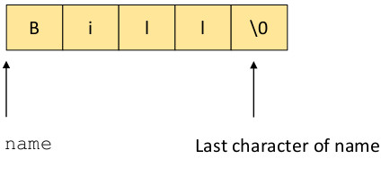
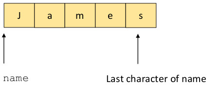

The C library function fgets() reads a string from stdin and copies it into a memory location. It is often
suggested as a more secure version of gets().The prototype for fgets is
char *fgets(char *str int size, FILE * stream))
The function fgets() stores the string of at most size characters read from stream at the memory location pointed to by
str,
including the null termination character '\0'.
fgets(), unlike gets(), puts a bound on the length of the string read and copied. For example, the code
int main(int argc, char **argv) {
char name[5];
printf("Enter name: ");
fgets(name,4,stdin);
}
reads a string of at most 4 characters rom stdin into the memory location pointed to by name.
However, if the programmer specifies a size in fgets() of more than 4 characters, the string may not be null terminated.
For example, if the user enters the string "Bill", the memory allocated for
name contain:

However, if the user enters "James", memory contains

and the null termination character is not stored.